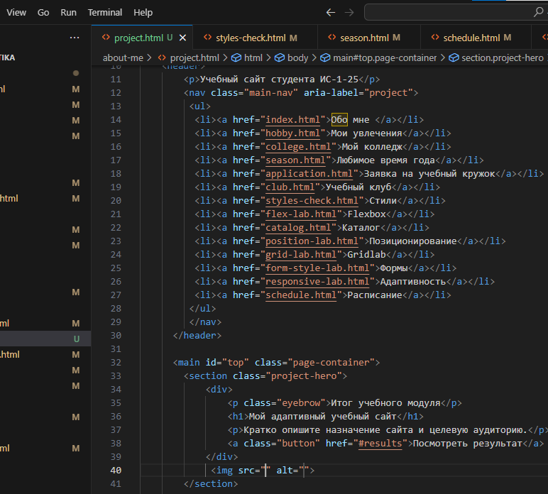

HTML
Семантическая структура и доступные элементы.
Учебный сайт студента ИС-1-25
Итог учебного модуля
Кратко опишите назначение сайта и целевую аудиторию.
Посмотреть результат
Семантическая структура и доступные элементы.
Flexbox, Grid, position и состояния.
Проверка телефона, планшета и компьютера.